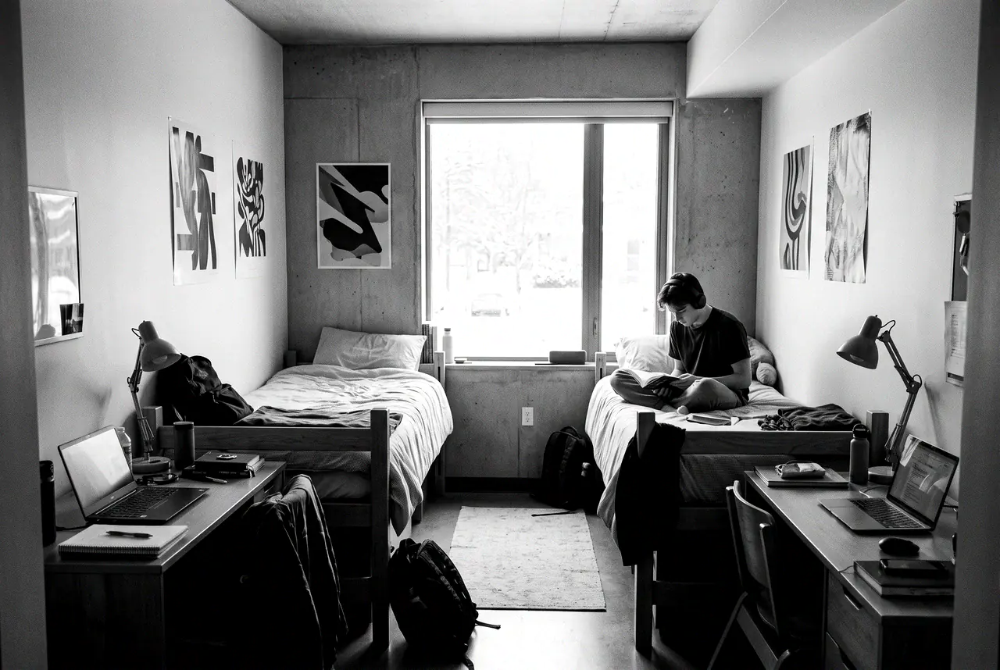
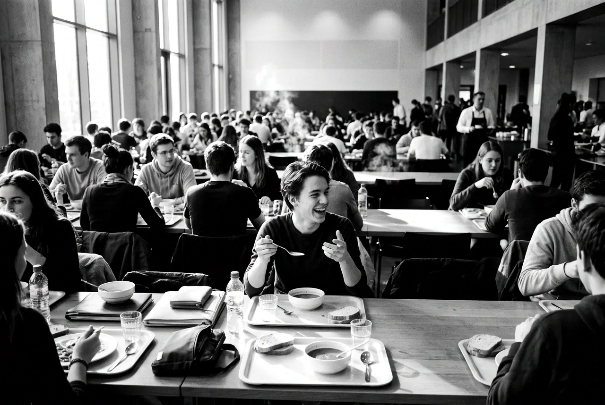

Где он
Кампус строится в микрорайоне Новокольцовский, рядом с выставочным центром «Екатеринбург-Экспо». Корпуса стоят в стороне от исторического Втузгородка, поэтому тем, кто живёт в кампусе, а учится на Мира, стоит заранее спланировать дорогу.
Задумывали кампус к Всемирной летней универсиаде 2023 года. Универсиаду не провели, а корпуса остались университету и городу.
Сколько мест
По проекту в общежитиях кампуса около 8 500 мест. Первые два студенческих корпуса, на 3 400 человек, заселили в 2024 году.
Сейчас в кампусе четыре общежития и гостиница — в путеводителях её называют НВК-3.
8 500мест в общежитиях по проекту
Переезд 2026 года
Осенью 2026 года заселение шло с 1 по 15 октября. В общежития 3 (гостиница), 4 и 5 заселяли с 1 октября, в общежития 1 и 2 — с 12 октября.
Первокурсникам места распределяют после студентов старших курсов: сначала на свободные места, затем — на те, что остались после первого этапа.

Что там есть
Кроме общежитий, на территории кампуса работает поликлиника и открываются учебные корпуса.
Как устроены этажи, кухни и прачечные, лучше смотреть на странице переезда: условия в разных корпусах отличаются.
